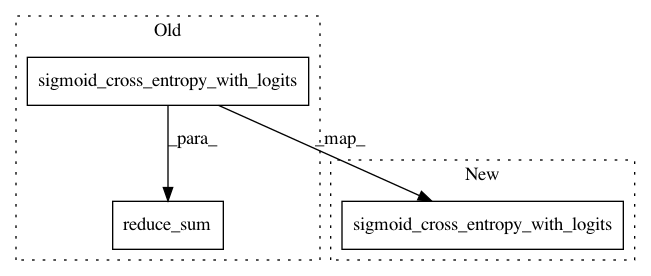

ecbe066e40882b166401b70ae9c4f1d535c93b12,texar/losses/adv_losses.py,,binary_adversarial_losses,#Any#Any#Any#Any#,12
Before Change
num_real_data = tf.shape(real_loss)[0]
ave_real_loss = tf.reduce_sum(real_loss) / tf.to_float(num_real_data)
fake_logits = discriminator_fn(fake_data)
fake_loss = tf.nn.sigmoid_cross_entropy_with_logits(
logits=fake_logits, labels=tf.zeros_like(fake_logits))
num_fake_data = tf.shape(fake_loss)[0]
ave_fake_loss = tf.reduce_sum(fake_loss) / tf.to_float(num_fake_data)
disc_loss = ave_real_loss + ave_fake_loss
if mode == "min_fake":
gen_loss = - ave_fake_loss
After Change
real_loss = tf.reduce_mean(tf.nn.sigmoid_cross_entropy_with_logits(
logits=real_logits, labels=tf.ones_like(real_logits)))
fake_logits = discriminator_fn(fake_data)
fake_loss = tf.reduce_mean(tf.nn.sigmoid_cross_entropy_with_logits(
logits=fake_logits, labels=tf.zeros_like(fake_logits)))
d_loss = real_loss + fake_loss
if mode == "min_fake":
g_loss = - fake_loss
In pattern: SUPERPATTERN
Frequency: 3
Non-data size: 3
Instances
Project Name: asyml/texar
Commit Name: ecbe066e40882b166401b70ae9c4f1d535c93b12
Time: 2017-12-21
Author: zichaoy@cs.cmu.edu
File Name: texar/losses/adv_losses.py
Class Name:
Method Name: binary_adversarial_losses
Project Name: shenweichen/DeepCTR
Commit Name: e666da279a878b3f1fe2969363cc5d6fa8d5408d
Time: 2018-01-15
Author: last.fantasy@qq.com
File Name: base.py
Class Name: TFBaseModel
Method Name: _create_metrics
Project Name: shenweichen/DeepCTR
Commit Name: 555f942b168996d5a67a8e610ce67fc4055c0584
Time: 2017-10-07
Author: last.fantasy@qq.com
File Name: deepfm.py
Class Name: DeepFM
Method Name: _create_loss